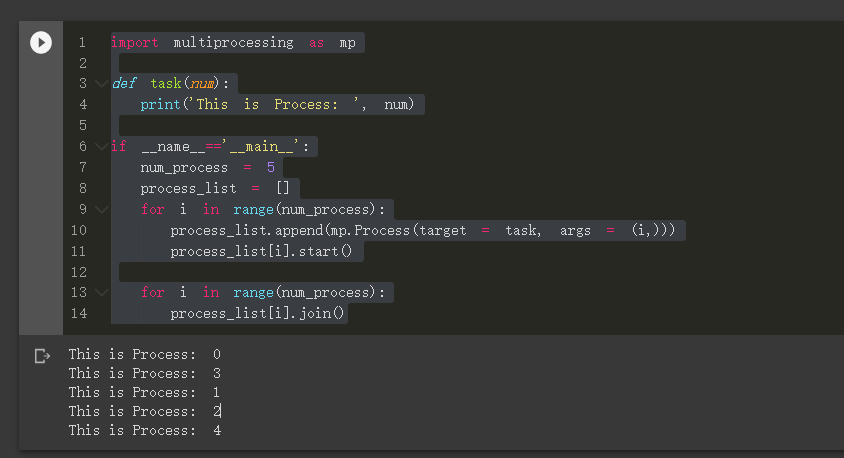

Multi-processing 和Multi-threading 的優缺點：
- Multi-processing (多處理程序/多進程)：
- 資料在彼此間傳遞變得更加複雜及花時間，因為一個 process 在作業系統的管理下是無法去存取別的 process 的 memory
- 適合需要 CPU 密集，像是迴圈計算
- Multi-threading (多執行緒/多線程)：
- 資料彼此傳遞簡單，因為多執行緒的 memory 之間是共用的，但也因此要避免會有 Race Condition 問題
- 適合需要 I/O 密集，像是爬蟲需要時間等待 request 回覆
import threading, logging, time
import multiprocessing
class Producer(threading.Thread):
def __init__(self):
threading.Thread.__init__(self)
self.stop_event = threading.Event()
def stop(self):
self.stop_event.set()
def run(self):
while not self.stop_event.is_set():
print("Producer is working...")
time.sleep(1)
class Consumer(multiprocessing.Process):
def __init__(self):
multiprocessing.Process.__init__(self)
self.stop_event = multiprocessing.Event()
def stop(self):
self.stop_event.set()
def run(self):
while not self.stop_event.is_set():
print("Consumer is working...")
time.sleep(1)
def main():
tasks = [Producer(), Consumer()]
for t in tasks:
t.start()
time.sleep(3600)
for task in tasks:
task.stop()
for task in tasks:
task.join()
if __name__ == "__main__":
logging.basicConfig(
format="%(asctime)s.%(msecs)s:%(name)s:%(thread)d:%(levelname)s:%(process)d:%(message)s",
level=logging.INFO,
)
main()
前言
出處: https://www.wongwonggoods.com/python/python-multiprocessing/
在 python 中有 thread 與 multiprocess 兩種平行處理程式的方式， 若只是單純的平行需求，我們可以使用 threading 這個模組來快速完成平行處理的方式。 但是 threading 只是透過頻繁的 CPU context-switch 的方式實現， 要真正實現多核心 CPU 的平行運算，我們需要使用 multiprocessing， 將任務指派給多個核心進行操作。
multiprocessing 在資料傳遞上，會因為需要將資料轉移至其他 CPU 上進行運算， 因此會需要考慮資料搬運的時間， 而多核心真正的實現「平行運算的功能」，當任務較為複雜時，效率一定比較好。
thread 與 multiprocess 比較
threading 重點摘要
threading 是透過 context-switch 的方式實現 也就是說，我們是透過 CPU 的不斷切換 (context-switch)，實現平行的功能。 當大量使用 threading 執行平行的功能時，反而會因為大量的 context-switch， 「實現了程式平行的功能，但也因為大量的 context-switch ，使得程式執行速度更慢」。
multiprocessing 重點摘要
multiprocessing 在資料傳遞上，會因為需要將資料轉移至其他 CPU 上進行運算， 因此會需要考慮資料搬運的時間， 而多核心真正的實現「平行運算的功能」，當任務較為複雜時，效率一定比較好。
thread 與 multiprocess 比較圖
從下圖我們可以看到任務被完成的「概念」時間
- main 1~4, main-end
- 任務 A1, A2
- 任務 B1, B2
- 任務 C1, C2
請留意圖中粗線的部分： * 在 multithread 中， CPU context-switch 會額外消耗我們程式執行的時間，程式實際完成時間可能比一般的還要慢。
- 在 multiprocess 中， 我們需要將資料轉移至其他 CPU 會額外消耗我們程式執行的時間，如果任務過於簡單，效益可能不大。
雖然示意圖中明顯感覺較快，但前提是任務夠複雜 也就是說，「任務難度執行的時間 > 資料轉移至其他 CPU 的時間效益」，不然只會更慢。

multiprocess 基本使用
基本的 multiprocess 使用方式，跟 thread 幾乎一樣， 如果學習過 multithread 的讀者，相信可以上手的很快。
範例程式碼 (single-multiprocess)
import multiprocessing as mp
def task(a, b):
print('Task in the Process.')
print(a, b)
if __name__=='__main__': # must put thread in the main
p1 = mp.Process(target=task, args=(1,2))
p1.start()
p1.join()
運行結果

說明
- p1 = mp.Process(target=task, args=(1,2))
- 建立一個名字為 p1 的 Process，執行 task 任務，傳入參數 (1,2)
- p1.start()：啟動 p1 任務
- p1.join()：等待 p1 任務結束 (一定會等到結束才執行下一行)
多個 Process 同時平行處理，「保證」任務「結果」的順序性 (multi-process)
我們「不保證」任務執行時，「過程中」輸出的順序，但完成「結果」的順序性可用 join() 來「保證」。
範例程式碼 (multi-process)
import multiprocessing as mp
def task(num):
print('This is Process: ', num)
if __name__=='__main__':
num_process = 5
process_list = []
for i in range(num_process):
process_list.append(mp.Process(target = task, args = (i,)))
process_list[i].start()
for i in range(num_process):
process_list[i].join()
運行結果 (注意：每次執行不一定相同)

注意：該輸入的都有輸出，但有些順序搶先輸出了，這也代表不同核心接到任務的順序。 所以「每次執行不一定相同」。
說明
- process_list.append(mp.Process(target = task, args = (i,)))
- 建立 Process，存入，執行 task 任務，傳入參數 (i, )
- process_list[i].start()：啟動 process_list[i] 任務
- process_list[i].join()：等待 process_list[i] 任務結束 (一定會等到結束才執行下一行)
多個 Process 同時平行處理，「保證」任務「過程中」的順序性 (multi-process)
答：沒有必要
如果是為了當任務「過程中」順序有高度要求時…你可能要想想
如果真要確保「過程中」照順序來，才做下一件事情，那你用 multi-process 到底要幹嘛XDD。 直接寫就好了，不用想太多 multi-process 的事情! 「又要多核心」、「又要平行任務」、「又要保證過程中的順序」， 光是保證「保證過程中的順序」，你的 process 執行過程之間就會互相卡爆了 還要效率不如直接不要平行了吧。
所以這邊就不示範了，你可能要先想清楚：為什麼都用到 multi-process ， 還需要保證任務「過程中」的順序性。(如果只是想確保執行「結果」的順序性，請見上面。)
利用 multiprocessing 模組 查看自己的CPU「有多少核心」
我們可以利用 multiprocessing 模組內建的功能， multiprocessing.cpu_count()，得到目前 cpu 的核心數量。
cpu_count = multiprocessing.cpu_count()
結合上述的程式範例，製作出「依照 CPU 核心數執行任務」的範例程式碼模板
import multiprocessing as mp
def task(num):
print('This is cpu core: ', num)
if __name__=='__main__':
cpu_count = mp.cpu_count()
print("cpu_count: ", cpu_count)
process_list = []
for i in range(cpu_count):
process_list.append(mp.Process(target = task, args = (i,)))
process_list[i].start()
for i in range(cpu_count):
process_list[i].join()
執行結果 (依照不同電腦的 CPU 能力而有異)

不過這樣的感覺很不踏實對吧! 感覺都要手動指定核心數量給 Process， 能不能讓系統自動分配呢?
當然是可以的，我們會再另外一篇文章 multiprocessing pool 教學進階的使用， 使用 pool 就可以自動讓系統幫我們分配任務給多個核心， 並且與 Process 最大的不同是「pool 能夠取得結果」。
Reference
-
Python 多執行緒 threading 模組平行化程式設計教學